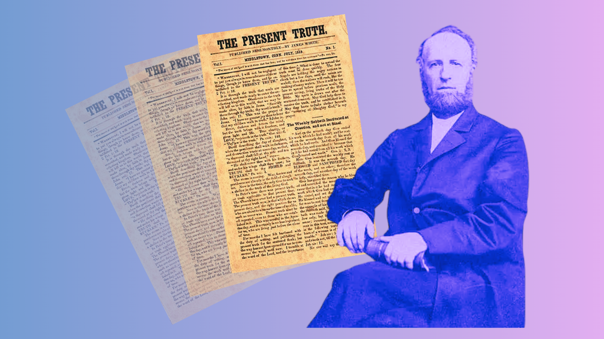

A Verdade Presente | James White
O artigo "The Present Truth", publicado por James White em julho de 1849, fundamenta as bases teológicas do movimento adventista em relação à vigência do Sábado e à distinção entre as leis bíblicas.
Abaixo, os pontos principais redigidos a partir do documento original:
1. O Conceito de "Verdade Presente"
James White define "verdade presente" como aquela que mostra o dever atual e a posição correta para aqueles que estão prestes a testemunhar o "tempo de angústia". Ele enfatiza a urgência de espalhar essas verdades enquanto os "quatro anjos" seguram os ventos das nações famintas, antes que o tempo de graça se encerre.
2. A Instituição do Sábado na Criação
O autor argumenta que o Sábado não foi instituído no Sinai para os judeus, mas no Éden para toda a humanidade.
Origem: Deus abençoou e santificou o sétimo dia logo após a criação, 2.500 anos antes do Sinai.
Universalidade: Citando Marcos 2:27, White afirma que o Sábado foi feito para o "homem" no sentido amplo (toda a raça humana), incluindo Adão, Noé e Abraão.
Evidência Pré-Sinai: O Sábado já era guardado por Israel no deserto de Sim, trinta dias antes de chegarem ao Sinai, comprovado pelo milagre do maná.
3. A Distinção entre as "Duas Leis"
Um ponto crucial do artigo é a separação clara entre a lei de Moisés e a Lei de Deus:
Lei de Moisés (Cerimonial): Escrita pela mão de Moisés em um livro, consistia em ritos carnais, sacrifícios e ofertas que foram "cravados na cruz" com a morte de Cristo.
Lei de Deus (Moral): Os Dez Mandamentos, escritos pelo dedo de Deus em tábuas de pedra. White afirma que esta lei é perpétua e preservada no santuário celestial.
4. A Perpetuidade da Lei no Novo Testamento
White contesta a ideia de que o Novo Testamento aboliu o Sábado:
Testemunho de Jesus: Cristo afirmou que nem um "tio ou iota" passaria da lei enquanto o céu e a terra existissem (Mateus 5:17-19).
Análise de Paulo: O autor explica que quando Paulo fala de uma lei "abolida" ou como "jugo de servidão", refere-se à lei cerimonial. Quando fala da lei "santa, justa e boa", refere-se aos Dez Mandamentos.
5. A Alteração Papal e o Julgamento Final
O artigo denuncia que o Sábado foi alterado do sétimo para o primeiro dia da semana pelo Papa, e não por Deus, que prometeu não alterar o que saiu de Seus lábios. White alerta que os Dez Mandamentos são a base pela qual o homem será julgado no tribunal de Deus.
Conclusão: O Selo e a Proteção
Para James White, a guarda do Sábado é uma parte vital da preparação para o dia do Senhor [a vinda de Cristo]. Obedecer à verdade bíblica serve como um "escudo e broquel" contra as pragas e destruições vindouras, permitindo que os fiéis permaneçam de pé na presença de um Deus Santo e sem um intercessor - já que Cristo deixou o santuário celestial - sendo assim, o fim do período de graça para a humanidade".
- Essencialista